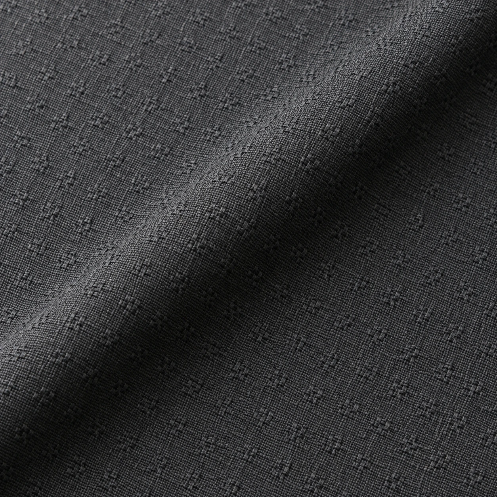
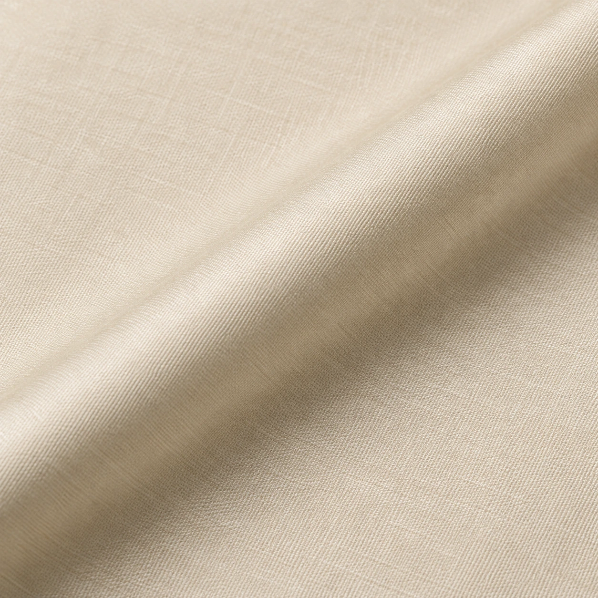

LZ-10
LZ-11 / Texture & Occasion / Cotton satin
Noor Cotton Satin
A cream study with a gentle sateen-lustre direction. Consider it for a shalwar kameez in occasion.
Illustrative fabric guidePKR 5,490Mockup budget for a typical unstitched suit-cut reference. Actual length and price depend on width, measurements and garment.
- Shade direction
- Cream
- Surface study
- Gentle sateen-lustre direction
- Visual weight
- Medium / design intent
- Intended use
- Shalwar kameez / Occasion
- Fibre, width, care
- Confirm against selected physical stock
A sateen-style surface with restrained directional lustre. Confirm the actual fibre blend.
Build a fabric & tailoring briefThis is a concept image and product budget for a website mockup. It is not a photograph or specification of confirmed LOOMZ stock.
The surface / 01
Look closer.
Gentle sateen-lustre direction. The macro visual invites a closer reading of the cloth; the final decision belongs to a physical swatch, its composition and the way it will be cut.